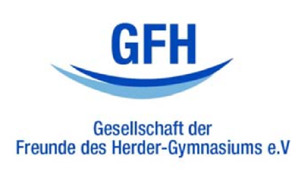

Seit 1956 besteht an der Herder-Schule (Herder-Gymnasium) unser Förderverein zur Unterstützung schulischer Aktivitäten. Schon damals gab es schulische Bereiche, für die keine oder nur sehr begrenzt öffentliche Mittel bereitstanden, so dass eine Förderung der Belange der Schüler und Lehrer an der Herder-Schule durch private finanzielle Mittel notwendig war. Diese Förderlücke versucht seitdem unser Förderverein durch seine streng satzungsgemäss gebundenen finanziellen Mittel zu füllen.
Unser Verein finanziert sich ausschließlich und direkt durch Beiträge seiner Mitglieder sowie freiwillige Spenden.
Unser Verein ist wegen der Förderung der Erziehung und Bildung nach dem letzten uns zugegangenen Freistellungsbescheid nebst Anlage I des Finanzamtes für Körperschaften Berlin I zur Steuernummer 27/666/50154 vom 01.07.2008 nach § 5 Absatz 1 Nummer 9 des Körperschaftsteuergesetzes und nach § 3 Nummer 6 des Gewerbesteuergesetzes von der Gewerbesteuer befreit, weil er ausschließlich und unmittelbar steuerbegünstigten und gemeinnützigen Zwecken im Sinne der §§ 51 ff. der Abgabenordnung dient.
Unser Verein ist berechtigt, sowohl für Mitgliedsbeiträge als auch für Spenden, die ihm zur Verwendung für die Erfüllung satzungsgemäßer Zwecke zugewendet werden, Zuwendungsbestätigungen nach § 50 Absatz 1 EStDV auszustellen.
Ihren Antrag auf Mitgliedschaft in der GESELLSCHAFT DER FREUNDE DES HERDER-GYMNASIUMS e.V. können Sie mit dem Beitrittsvordruck beim Vorstand stellen.
Vorstand
Erste Vorsitzende: Franziska Glatt (vorsitzender@herder-freunde.de)
Beratende Vorstandsmitglieder: Robert Bartz, Patrick Vogel, Stefan Hoheisel, Inka Claus (Vertreter: Thilo Steinkrauß)
Kassenprüferinnen
Elke Giucci
Peter Herrmann
Fan-Shop-Verwaltung
Sabine Tonke
Kontakt
Den Vorstand des Fördervereins erreichen Sie unter oben genannten Mailadressen. Unter der Adresse infoherder-freunde.de sind wir außerdem jederzeit für Sie erreichbar.
Ihre Geldspenden sind auf unserem Konto (IBAN DE 39 1001 0010 0001 1201 03 - Postbank Berlin) herzlich willkommen. Sollten Sie eine Spendenquittung zur Vorlage bei Ihrem Finanzamt benötigen, teilen Sie uns bitte neben Ihrem Vor und Familiennamen auch Ihre vollständige Wohnanschrift schriftlich mit. Im Falle einer Sachspenden nehmen Sie bitte zusätzlich mit unserem Kassenwart Kontakt auf. Er wird Ihnen sodann gerne eine besondere Spendenquittung übersenden.

Formular für Zuschuss-Anträge
Anträge für Fördermaßnahmen können mit dem folgenden Formular bei der GFH gestellt werden: GFH-Zuschuss-Antrag.pdf